Dormammu (Terre-616)
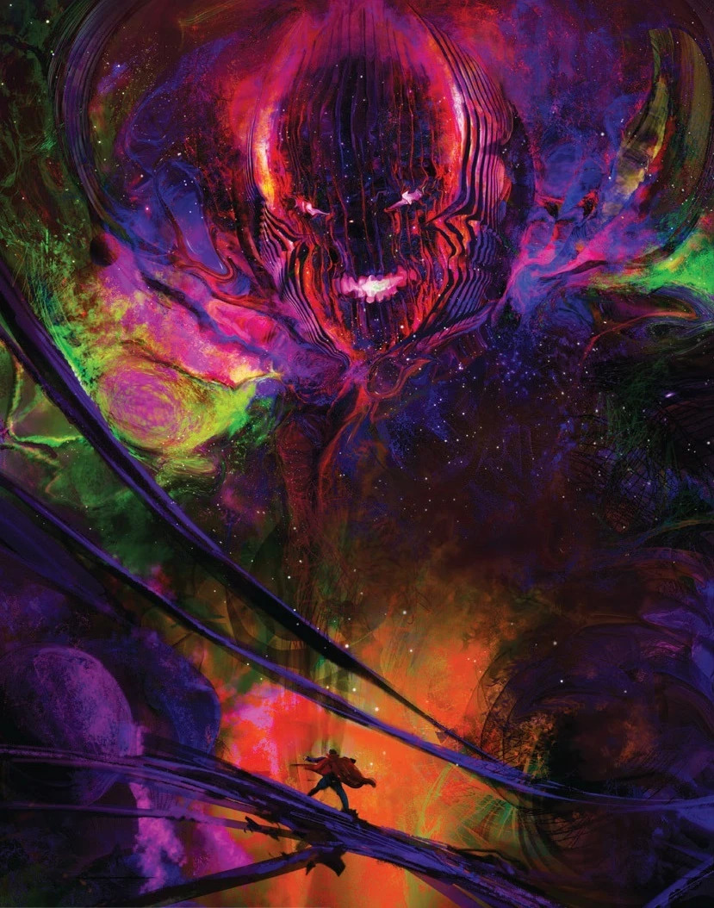
Origines :
Dormammu et sa soeur Umar naquirent il y a des milliers d'années, voire des millions, dans la dimension des puissants êtres d'énergie pure connus sous le nom de Faltine.
Contrairement à leurs semblables, ils défièrent la tradition Faltine en amassant de la matière.
Leurs actions entraînèrent la mort de leur parent, Sinifer, après quoi ils furent exilés par les autres Faltines.
Errant à travers les dimensions, Dormammu et Umar continuèrent d'accumuler de la matière en l'incorporant à leur être.
Leur quête les mena finalement jusqu'à la Dimension Noire, un vaste royaume traversé de distorsions naturelles vers des univers parallèles.
La jugeant idéale pour leurs ambitions, ils utilisèrent la matière accumulée pour acquérir des formes humanoïdes permanentes.
A cette époque, la Dimension Noire connaissait une paix relative depuis environ 28 000 ans, sous le règne du roi-sorcier Olnar.
Malgré les avertissements des Mhuruuks, ses conseillers mystiques, Olnar les accueillit et leur offrit le pouvoir en échange du savoir nécessaire pour briser les barrières dimensionnelles et absorber d'autres royaumes.
Un jour, Dormammu mena par hasard Olnar au royaume des Sans-Esprit, des créatures de destruction pure et implacable.
Les Sans-Esprit semèrent ensuite la terreur dans la Dimension Noire et tuèrent Olnar ainsi qu'une grande partie de son peuple.
Dormammu et Umar saisirent l'occasion pour repousser les créatures et les sceller, et profitèrent du chaos pour éliminer la plupart des Mhuruuks, consolidant ainsi leur pouvoir.
Acclamés comme des sauveurs, ils furent proclamés régents de la Dimension Noire, et le jeune fils d'Olnar, Orini, fut confié à leur protection.
En tant que souverain, Dormammu reprit partiellement sa forme Faltine originelle, un corps enveloppé de flammes.
Il fusionna ensuite son essence avec les énergies mystiques inhérentes à la Dimension Noire, amplifiant sa puissance à des niveaux sans précédent.
On sait peu de choses des débuts du règne de Dormammu, mis à part qu'il aurait observé la dimension terrestre pendant des millénaires et aurait influencé le développement de Satannish durant la préhistoire ancienne.
Il se serait également fréquemment opposé à Agamotto, le premier Sorcier Suprême de la Terre.
En 1666, il tenta de conquérir la Terre en utilisant le « Grand Incendie de Londres » pour alimenter sa magie noire.
En drainant la force vitale des victimes, il projetait d'ouvrir un portail à Stonehenge reliant la Terre à sa Dimension Noire, mais son plan fut déjoué par le Sorcier Suprême Yao.
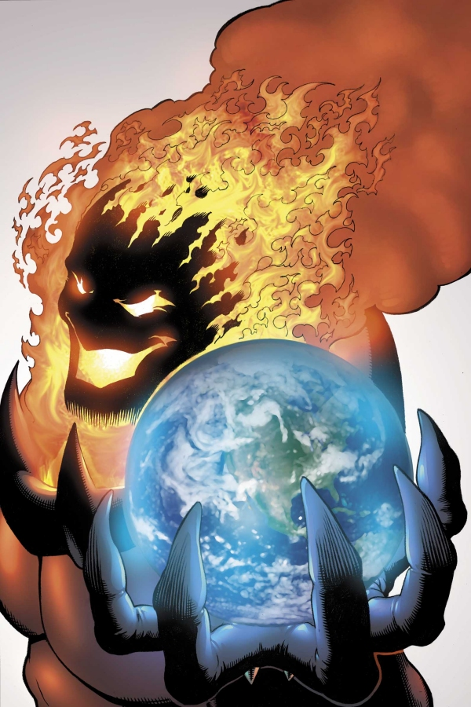
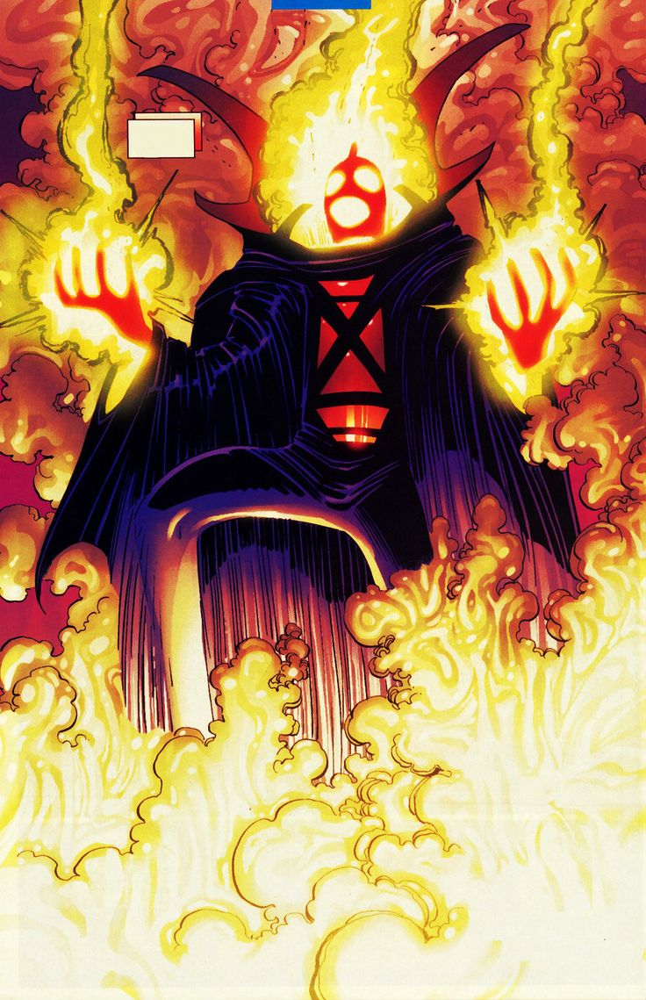
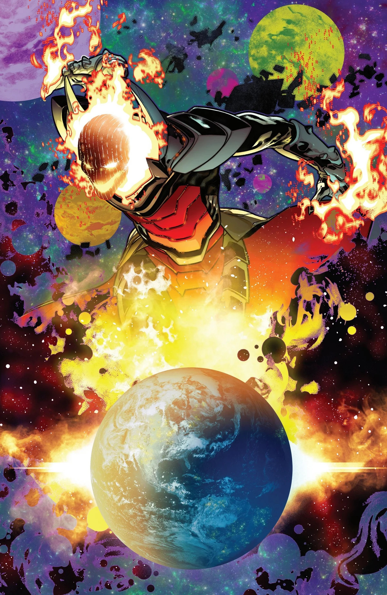
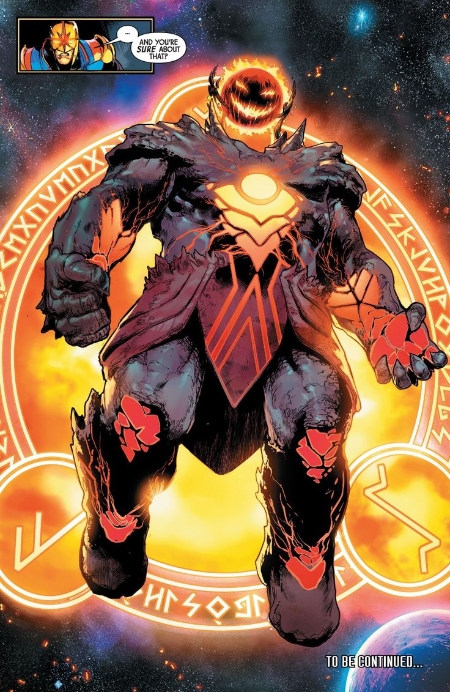
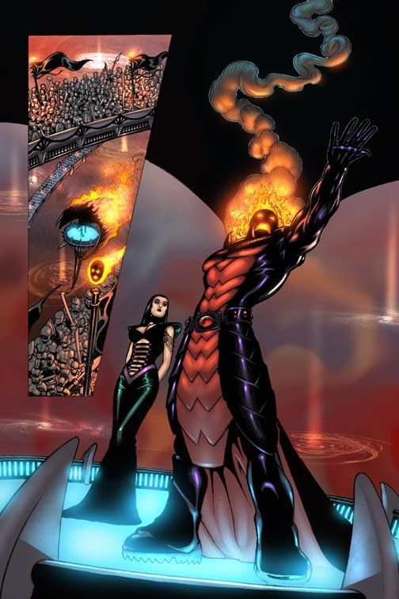
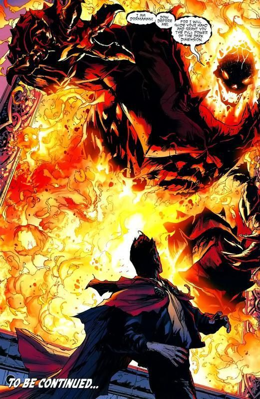
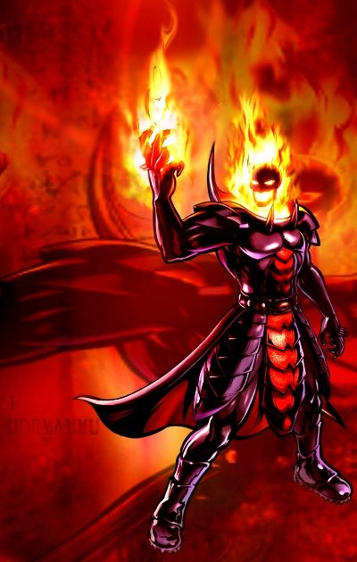
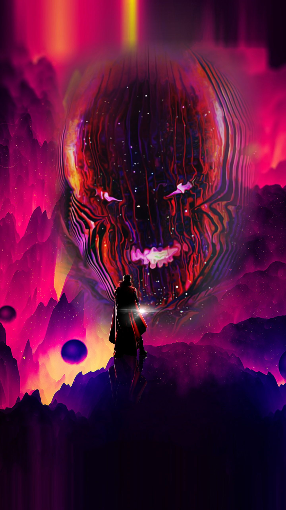

Capacités :
Dormammu est une entité interdimensionnelle composée d'énergie mystique pure, ce qui fait de lui l'un des plus puissants sorciers.
Il est vénéré par de nombreuses races à travers les dimensions, ce qui alimente continuellement sa puissance, qu'il tire majoritairement de la Dimension Noire.
Physiquement, Dormammu est virtuellement indestructible et sa magie peut le changer en un colosse infatigable, voire le rendre plus fort que Hulk lorsque celui-ci est en colère.
Il peut utiliser son énergie mystique dans une grande variété d'effets, comme la projection d'énergie, le voyage inter-dimensionnel, la téléportation dans l'espace ou le temps, la manipulation ou la transmutation de la matière, changer d'apparence et de taille à volonté, la possession, la nécromancie, la création d'êtres artificiels et même partager son pouvoir avec autrui.
Ses pouvoirs sont cependant bien plus importants au sein de la Dimension Noire, et est vulnérable dans des environnements autres que celle-ci.

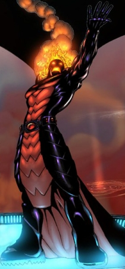
Apparence :
Dormammu est une entité mystique gigantesque, à l'apparence entre le démoniaque et le cosmique.
Son trait le plus reconnaissable est son crâne entièrement enveloppé de flammes surnaturelles (les flammes Faltines mystiques) remplaçant ses cheveux.
Son visage est humanoïde avec des traits sévères, une peau généralement noire et ses yeux brillent d'une lumière blanche sans pupille.
Il porte une lourde armure métallique aux teintes rouge ou violacées, ornée de pointes et de larges épaulières, et souvent accompagnée d'une longue cape rouge ou violette.
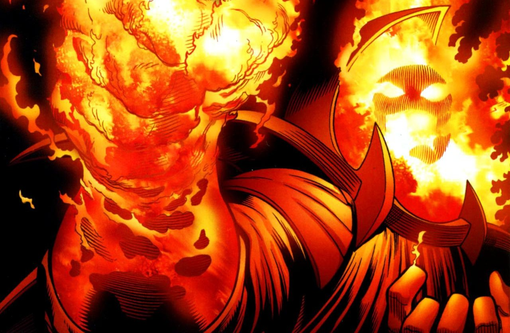
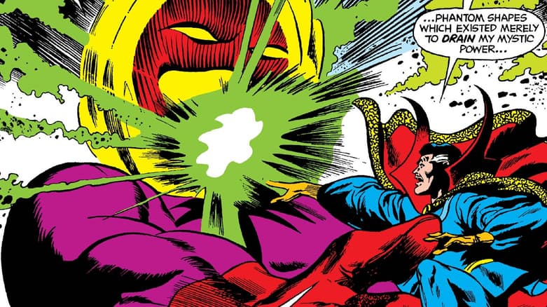
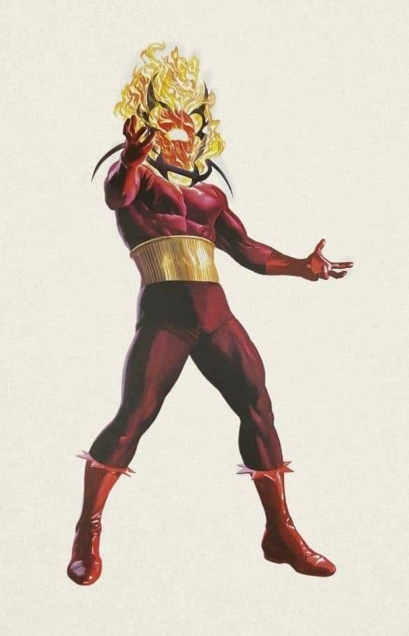
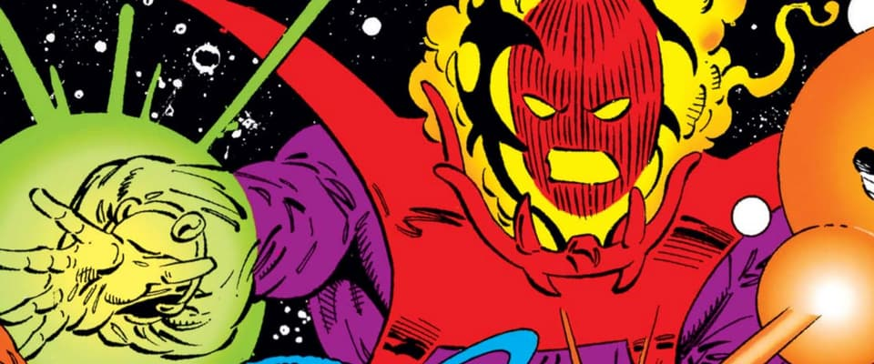
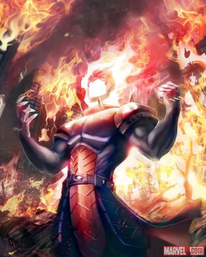
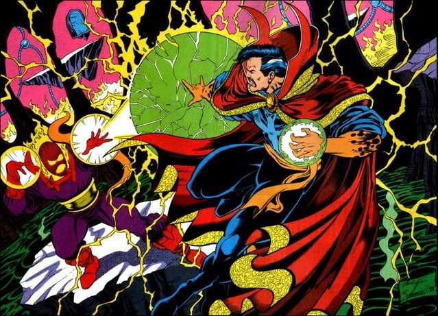
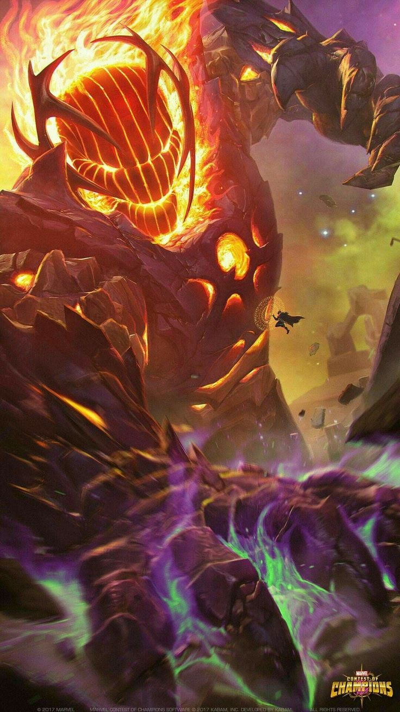
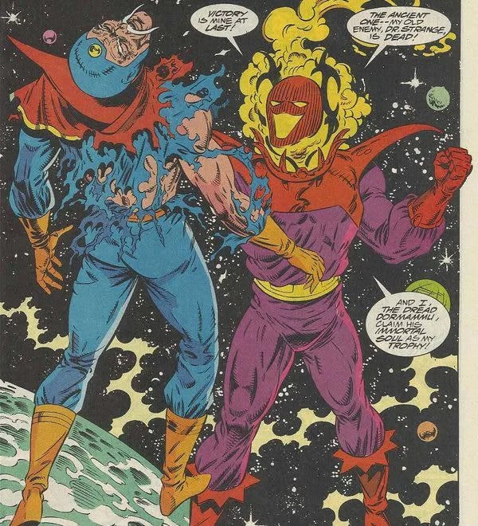
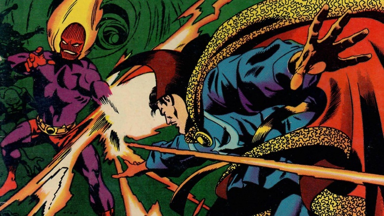
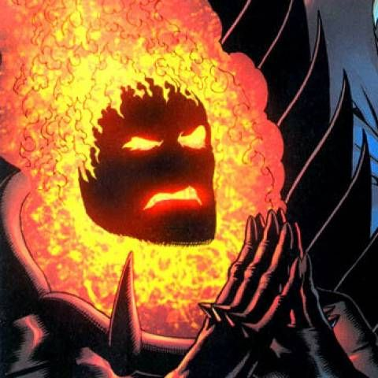